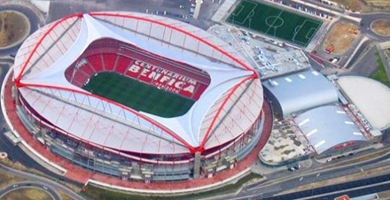
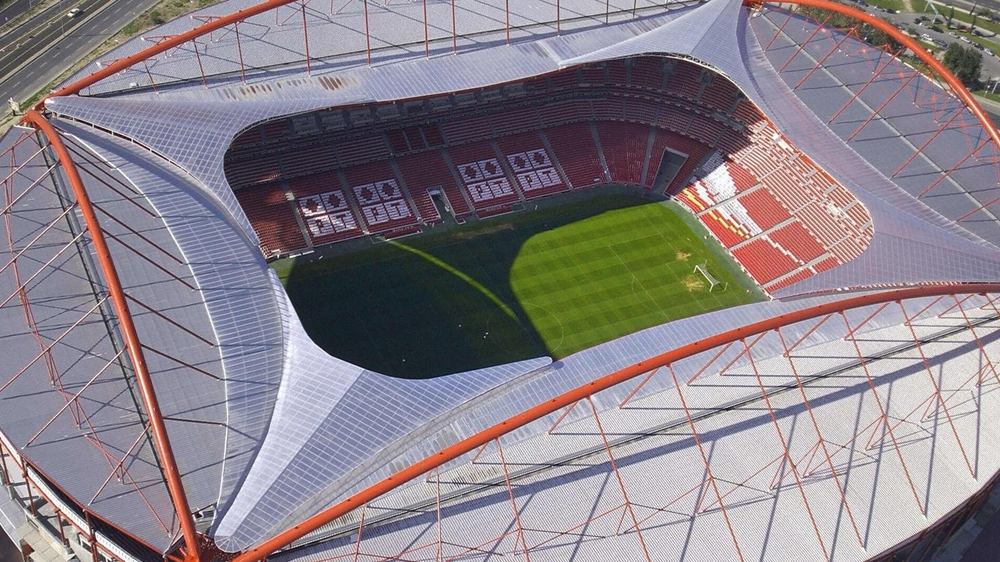
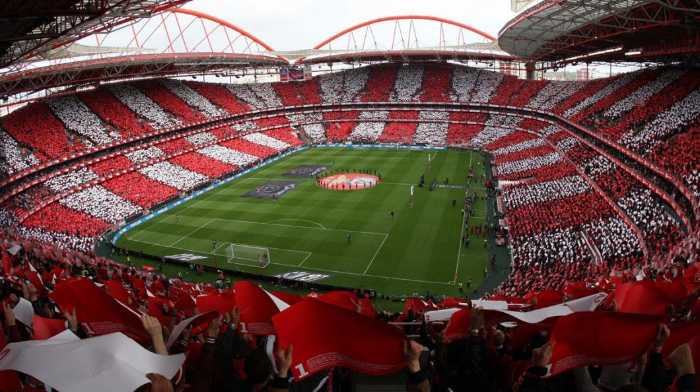
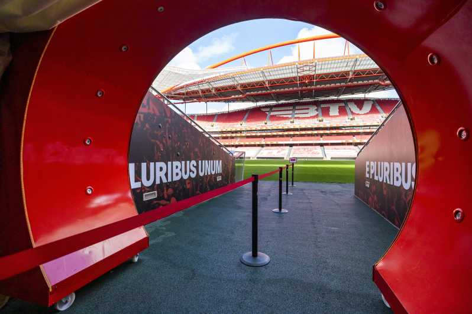
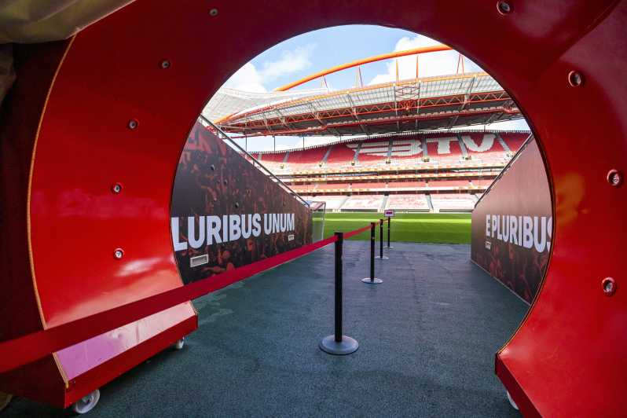
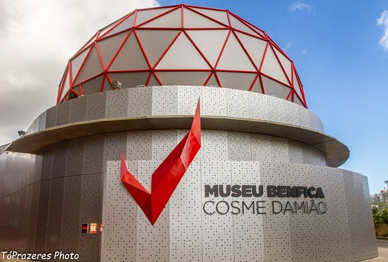
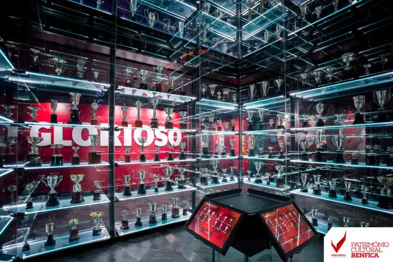
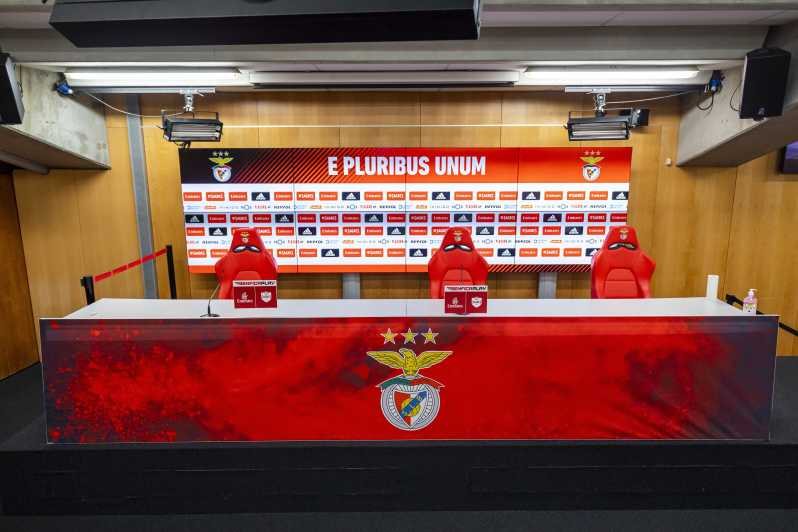
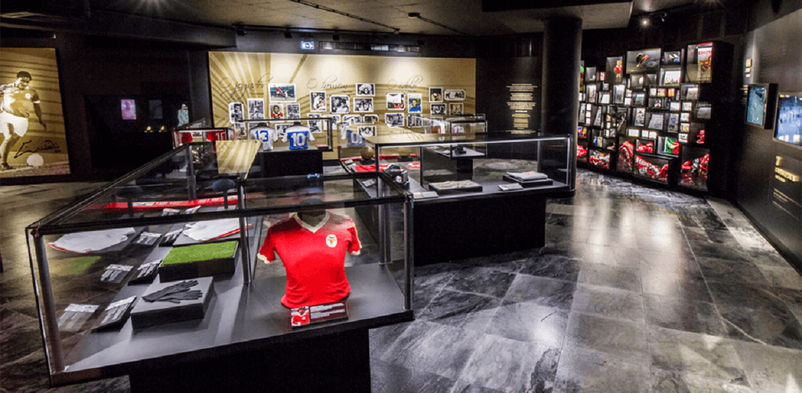

Le Estádio da Luz, un stade omnisports situé à Lisbonne, au Portugal, construit en 1954 par Joao Simoes et démoli en 2003 par Damon Lavelle pour être remplacé par un nouveau stade de même nom. Il est utilisé pour les rencontres à domicile du club de Benfica mais aussi pour l’équipe nationale du Portugal. C’est le plus grand stade de football du Portugal et un des plus grands d'Europe. Le stade a une pelouse naturelle de 105 x 68m avec une capacité de 64 642 personnes.
   

Le stade est aussi composé d'un musée
   